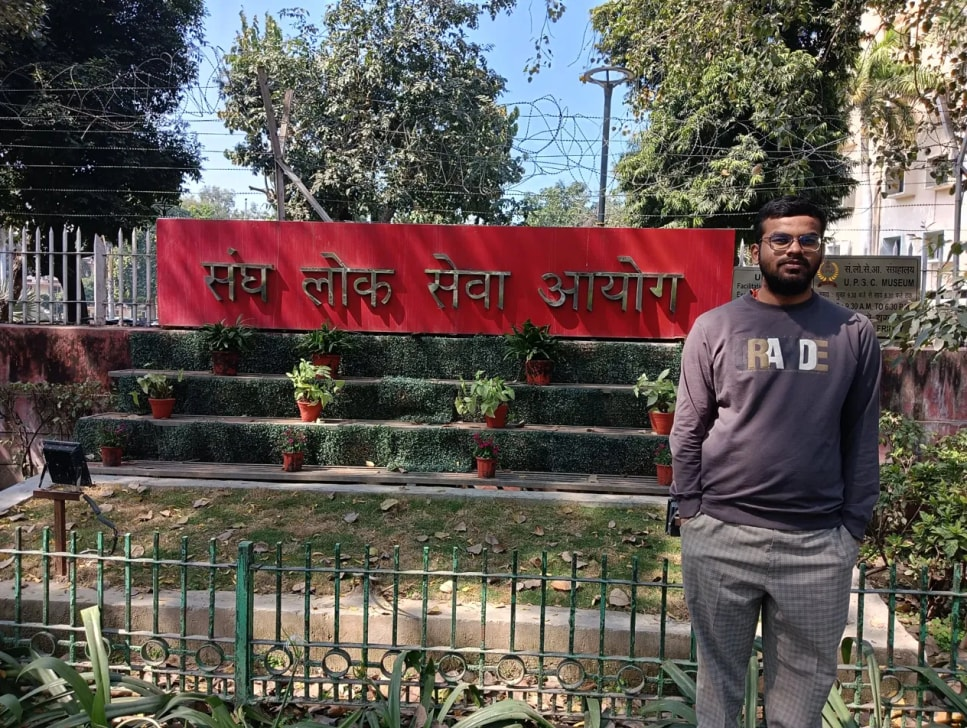

—
Geography Optional
Public Study Desk
Chinmaya Patro — UPSC Civil Services Aspirant
Preparing for the Civil Services Examination with Geography as my optional subject. I built this static site as a calm, distraction-free public study desk—keeping the official syllabus, past-year questions, and Prelims practice in one place, with all progress saved privately in my browser.

Desk Inventory
Everything on the desk, counted live
—
—
—
Three Stages
What I’m preparing
Each stage has its own rhythm—objective elimination for Prelims, structured synthesis for Mains, and spatial depth for Geography Optional.
Stage I · Objective
Prelims
General Studies Paper I and CSAT. Daily MCQ drills, timed full-paper simulations from 1995 to 2026, strict +2 / −0.66 scoring, and targeted revision of wrong or bookmarked questions.
Stage II · Written
Mains
GS Papers I–IV, Essay, and Ethics case studies across 19 subject groups from 2013 onward. Filter by topic or year, track answers written, and spot recurring themes.
Optional · 500 Marks
Geography Optional
Paper I (Principles of Geography) and Paper II (Geography of India), including map-pointing practice and four decades of topic-wise questions from 1986 to 2026.
Working Notes
My approach
Three quiet rules that keep preparation grounded when the reading list grows too loud.
-
Syllabus and PYQs first, sources second
Every reading session starts with the official syllabus line and past UPSC questions, so books serve the exam rather than the other way around.
-
Small, verifiable daily loops
Ticking off a syllabus sub-topic, logging one written Mains answer, or reviewing ten wrong Prelims MCQs beats ambitious plans that never survive a week.
-
Spatial thinking across every paper
Geography is not confined to the Optional paper—maps, regional patterns, and human-environment links sharpen GS I, III, and International Relations alike.